Supplied unofficial study solution, not an official GTU answer key. Answers and teaching diagrams have not been independently verified. Use Enlarge image for small details.આ આપેલો બિનસત્તાવાર અભ્યાસ ઉકેલ છે, સત્તાવાર GTU જવાબવહી નથી. જવાબો અને આકૃતિઓની સ્વતંત્ર ચકાસણી થઈ નથી. વાંચવા માટે ચિત્ર મોટું કરો.
Electrical Power Transmission & Distribution
Q1 · Overhead line elements
Q.1 (a) Write short note on ACSR wire. (3 marks)Q.1 (a) Write short note on ACSR wire. (3 marks)3 marks૦૩ ગુણ
ACSR — Aluminium Conductor Steel Reinforced:
- Construction: Central steel core (1–7 galvanised steel strands) for tensile strength, surrounded by 1–4 layers of hard-drawn aluminium strands for conductivity. Designation e.g., 6/1 = 6 Al +1 steel.
- Why composite: Aluminium alone weak (sags more); steel adds strength with little conductivity loss (skin effect pushes AC current to outer Al). High strength-to-weight, long spans, lower sag.
- Features: Corrosion protected (grease), good thermal limit (~75–90°C), economical for HV transmission (132kV+). Variants: AAC (all-Al), AAAC (all-alloy), ACAR.
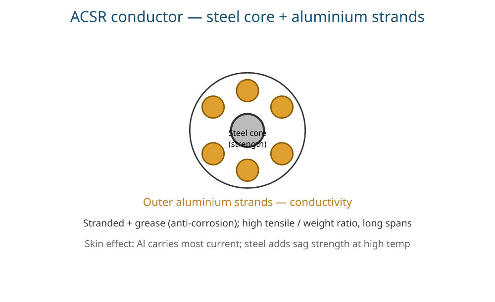
ACSR — Aluminium Conductor Steel Reinforced:
- બંધારણ: વચ્ચે steel core (1–7 galvanised steel strands) tensile strength માટે, આસપાસ 1–4 layers hard-drawn aluminium strands conductivity માટે. Designation દા.ત. 6/1 = 6 Al +1 steel.
- Composite શા માટે: માત્ર Aluminium નબળું (વધુ sag); steel થોડી conductivity ગુમાવ્યા વગર strength ઉમેરે (skin effect થી AC current બહારના Al માં જાય). Strength-to-weight વધારે, લાંબા spans, ઓછો sag.
- લાક્ષણિકતા: Corrosion protected (grease), સારી thermal limit (~75–90°C), HV Transmission (132kV+) માટે economical. Variants: AAC (બધું Al), AAAC (બધું alloy), ACAR.
Q.1 (b) State methods of improving string efficiency and explain Use of grading ring method in detail. (4 marks)Q.1 (b) State methods of improving string efficiency and explain Use of grading ring method in detail. (4 marks)4 marks૦૪ ગુણ
String efficiency (η = Vstring / n×Vdisc-nearest-line ×100%). Unequal voltage sharing due to shunt capacitance (disc to tower) → bottom disc overstressed.
Methods:
- Capacitance grading: Use progressively larger capacitance for lower discs (bigger discs) to offset shunt leakage → equalises voltage.
- Static shielding (grading ring): Metallic ring at line end connected to line, shaping capacitance to tower.
- Longer cross-arm / guard ring / arcing horns / optimal string length.
Grading ring in detail: Toroidal/circular metal ring encircling lower discs, electrically tied to line conductor. It introduces additional capacitance from ring to each disc/tower, injecting charging current that compensates shunt capacitance current. Result: voltage more evenly distributed, string efficiency rises from ~70% to 90–95%, corona inception improved, also acts as corona shield. Design: diameter ~ string length, positioned to cover line-end disc, with smooth surface to reduce corona itself.
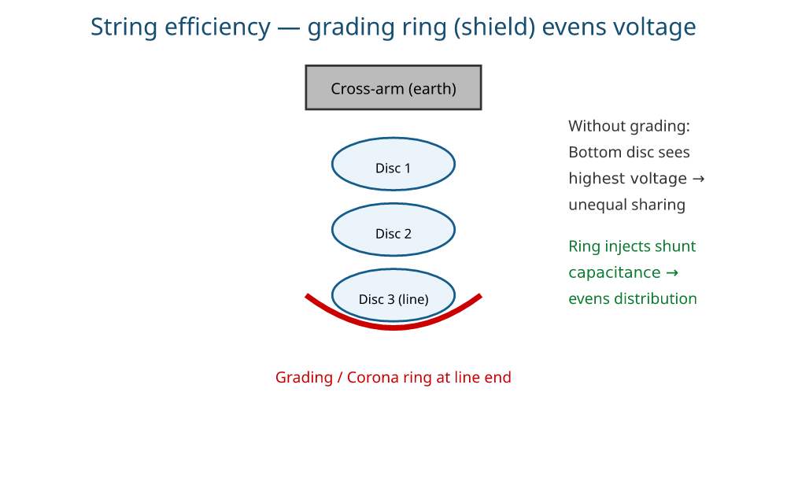
String efficiency (η = Vstring / n×Vdisc-nearest-line ×100%). Shunt capacitance (disc થી tower) ને કારણે અસમાન voltage sharing → નીચેનો disc વધુ stress.
પદ્ધતિઓ:
- Capacitance grading: નીચેના discs માટે વધારે capacitance (મોટા discs) વાપરી shunt leakage ને offset કરો → voltage સમાન થાય.
- Static shielding (grading ring): Line end પર metallic ring, tower તરફ capacitance ને shape કરે.
- લાંબો cross-arm / guard ring / arcing horns / યોગ્ય string length.
Grading ring વિગતવાર: નીચેના discs ને ઘેરતી toroidal/circular metal ring, line conductor સાથે જોડેલી. તે ring થી દરેક disc/tower તરફ વધારાની capacitance ઉમેરે, charging current inject કરી shunt capacitance current ને compensate કરે. પરિણામ: voltage વધુ સમાન રીતે વહેંચાય, string efficiency ~70% થી 90–95% સુધી વધે, corona inception સુધરે, સાથે corona shield તરીકે પણ કામ કરે. Design: diameter ~ string length, line-end disc ને cover કરે, corona પોતે ઘટાડવા smooth surface.
Q.1 (c) What is line support? Explain types of line support. (7 marks)Q.1 (c) What is line support? Explain types of line support. (7 marks)7 marks૦૭ ગુણ
Line support = structures carrying conductors + insulators at required height/clearance and tension. Must withstand vertical (weight), transverse (wind), longitudinal (unbalanced tension) loads plus erection/maintenance.
Classification:
| Type | Use / features |
|---|---|
| Wooden poles (single A/H) | LV–33kV, cheap, short life (15yr), limited span (40–50m), creosote treated |
| RCC / PCC poles | Urban LV, durable, 30yr, good strength, easy erection |
| Steel tubular / rail poles | 11–33kV, longer spans, galvanised |
| Lattice towers (4-leg) | 66kV+ EHV, long spans 250–500m, angle/suspension/termination/ transposition towers; designed for wind/ice |
| Guyed / monopole | Higher voltage with guys, aesthetic where allowed |
By function: Suspension (straight, 0–2° deviation, carries weight), Tension/Angle (5–90°, takes unbalanced pull), Terminal/Dead-end (line ends, full tension), Transposition. Special: river crossing, railway crossing.
Selection depends on voltage, span, terrain, wind/ice zone, cost, ROW, aesthetics. Every support has foundations (pad/pile), cross-arms, insulators, earthing, danger plate, anti-climbing.
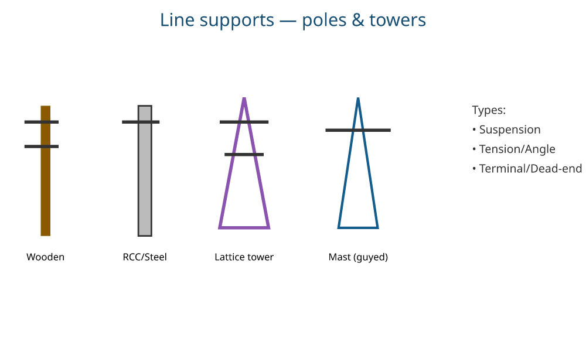
Line support = conductors + insulators ને જરૂરી height/clearance અને tension પર વહન કરતી structures. Vertical (weight), transverse (wind), longitudinal (unbalanced tension) loads વત્તા erection/maintenance સહન કરવું પડે.
વર્ગીકરણ:
| પ્રકાર | ઉપયોગ / લાક્ષણિકતા |
|---|---|
| Wooden poles (single A/H) | LV–33kV, સસ્તું, ટૂંકી life (15વર્ષ), મર્યાદિત span (40–50m), creosote treated |
| RCC / PCC poles | Urban LV, ટકાઉ, 30વર્ષ, સારી strength, સરળ erection |
| Steel tubular / rail poles | 11–33kV, લાંબા spans, galvanised |
| Lattice towers (4-leg) | 66kV+ EHV, લાંબા spans 250–500m, angle/suspension/termination/transposition towers; wind/ice માટે design |
| Guyed / monopole | Guys સાથે higher voltage, જ્યાં મંજૂર aesthetic |
Function પ્રમાણે: Suspension (સીધું, 0–2° deviation, weight વહન), Tension/Angle (5–90°, unbalanced pull), Terminal/Dead-end (line છેડા, પૂરો tension), Transposition. Special: river crossing, railway crossing.
પસંદગી voltage, span, terrain, wind/ice zone, cost, ROW, aesthetics પર આધારિત. દરેક support પર foundations (pad/pile), cross-arms, insulators, earthing, danger plate, anti-climbing હોય.
Q.1 (c) OR What is line Insulator? Explain types of insulator. (7 marks)Q.1 (c) OR What is line Insulator? Explain types of insulator. (7 marks)7 marks૦૭ ગુણ
Insulator = electrically isolates live conductor from earthed support/tower and provides mechanical support. Must have high dielectric strength, mechanical strength, non-porous, weather resistant, no leakage path.
Types:
| Type | Details |
|---|---|
| Pin insulator | Single piece on pin, 11–33kV (one pin per conductor); petticoats increase creepage; fails beyond 33kV (bulky, pin strength) |
| Suspension (disc) insulator | String of discs (porcelain/glass/polymer) — voltage adds per disc (~11kV/disc); flexible, for 33kV+ EHV, string efficiency matters; grading ring used |
| Strain / tension insulator | Heavy string in horizontal tension at dead-ends/corners; higher mechanical strength |
| Shackle / spool | LV distribution (400V) on poles; small D-shaped |
| Stay / egg insulator | In guy wires — prevents energising stay wire |
| Post / bushing | Substation support, wall bushing; solid core |
Materials: Porcelain (glazed, strong), toughened glass (transparent, self-shattering on fault), polymer/silicone composite (hydrophobic, light, vandal-resistant, now dominant for EHV). Arcing horns/rods protect against flashover; creepage distance chosen per pollution severity (IEC 60815).
Properties: high dielectric, compressive/tensile strength, low thermal expansion, chemical inert, glazed to repel water.
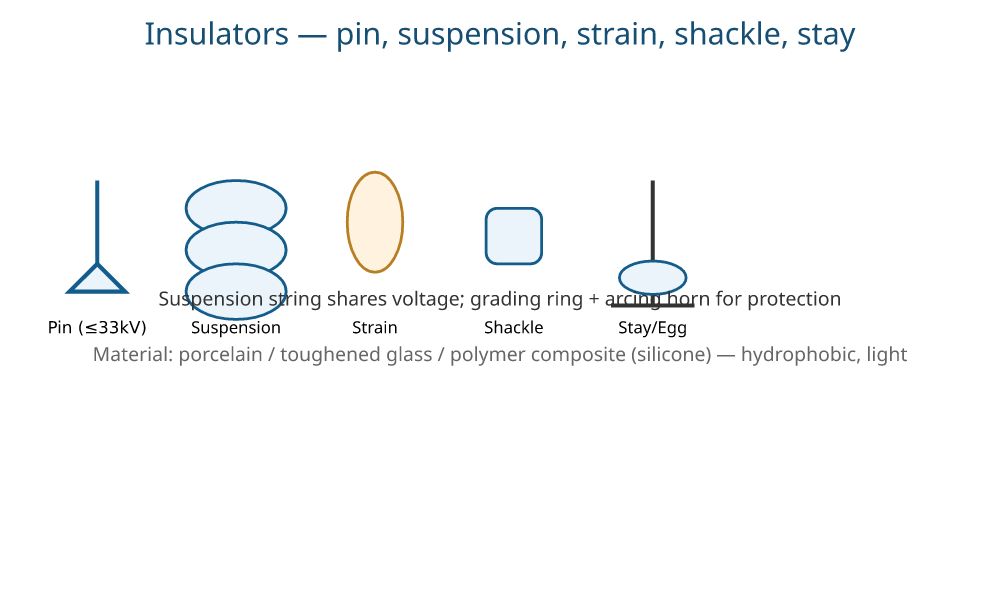
Insulator = live conductor ને earthed support/tower થી electrically isolate કરે અને mechanical support આપે. High dielectric strength, mechanical strength, non-porous, weather resistant, leakage path નહીં — જરૂરી.
પ્રકારો:
| પ્રકાર | વિગત |
|---|---|
| Pin insulator | Pin પર single piece, 11–33kV; petticoats creepage વધારે; 33kV થી વધુ નિષ્ફળ (મોટું, pin strength મર્યાદા) |
| Suspension (disc) insulator | Discs ની string (porcelain/glass/polymer) — દર disc દીઠ ~11kV; flexible, 33kV+ EHV માટે, string efficiency મહત્વનું; grading ring વપરાય |
| Strain / tension insulator | Dead-ends/corners પર horizontal tension માં heavy string; વધુ mechanical strength |
| Shackle / spool | LV distribution (400V) poles પર; નાનું D-shaped |
| Stay / egg insulator | Guy wires માં — stay wire energise ન થાય |
| Post / bushing | Substation support, wall bushing; solid core |
Materials: Porcelain (glazed, મજબૂત), toughened glass (પારદર્શક, fault પર self-shattering), polymer/silicone composite (hydrophobic, હળવું, vandal-resistant, હવે EHV માટે પ્રભાવી). Arcing horns/rods flashover સામે રક્ષા; creepage distance pollution severity પ્રમાણે (IEC 60815).
ગુણધર્મો: high dielectric, compressive/tensile strength, ઓછું thermal expansion, chemical inert, પાણી દૂર કરવા glazed.
Q2 · Line performance and grid operation
Q.2 (a) Explain Load forecasting and Load scheduling. (3 marks)Q.2 (a) Explain Load forecasting and Load scheduling. (3 marks)3 marks૦૩ ગુણ
Load forecasting = predicting future electrical demand.
- Short-term (hours–weeks): Unit commitment, generation scheduling, market bidding — uses weather, day-type, historical load, events.
- Medium/long-term (months–years): Capacity planning, fuel contracts, transmission expansion — uses GDP, population, industrial growth, efficiency trends.
Load scheduling (despatch) = allocating predicted load to available generators in merit order. Economic load dispatch (least cost) respecting constraints: generation limits, ramp rates, transmission limits, reserves, emissions. Day-ahead + intra-day rescheduling corrects forecast errors with frequency control/AGC.
Load forecasting = ભવિષ્યની electrical demand ની આગાહી.
- Short-term (કલાકો–અઠવાડિયા): Unit commitment, generation scheduling, market bidding — weather, day-type, historical load, events વપરાય.
- Medium/long-term (મહિનાઓ–વર્ષો): Capacity planning, fuel contracts, transmission expansion — GDP, population, industrial growth, efficiency trends વપરાય.
Load scheduling (despatch) = આગાહી કરેલ load ને ઉપલબ્ધ generators માં merit order પ્રમાણે વહેંચવું. Economic load dispatch (સૌથી ઓછી cost) constraints ને ધ્યાનમાં રાખી: generation limits, ramp rates, transmission limits, reserves, emissions. Day-ahead + intra-day rescheduling forecast ભૂલોને frequency control/AGC થી સુધારે.
Q.2 (b) Explain one sun, one world, one grid. (4 marks)Q.2 (b) Explain one sun, one world, one grid. (4 marks)4 marks૦૪ ગુણ
OSOWOG — “One Sun, One World, One Grid”: Initiative (India-proposed, supported by ISA) to interconnect national/regional grids across continents via HVDC links, so solar power from daytime zones can serve nighttime demand elsewhere.
Concept: Solar is intermittent locally but always shining somewhere on Earth. By linking grids East–West (and eventually North–South), peaks in one region offset deficits in another → higher solar utilisation, reduced storage needs, smoother net load.
Implementation phases: Phase-I Middle East–South Asia–South-East Asia interconnection; Phase-II to Africa; Phase-III global interconnection — leveraging HVDC, UHVAC, smart grids, markets.
Benefits/challenges: Benefits: decarbonisation, energy security, cheaper solar, global cooperation. Challenges: huge investment, political/regulatory harmonisation, technical standards (frequency, protection), cyber-security, corridor routing.
OSOWOG — “One Sun, One World, One Grid”: India દ્વારા પ્રસ્તાવિત પહેલ (ISA સમર્થિત) — HVDC links દ્વારા રાષ્ટ્રીય/પ્રાદેશિક grids ને continents માં જોડવી, જેથી દિવસના zones ની solar power રાતના demand ને પૂરી પાડી શકે.
ખ્યાલ: Solar સ્થાનિક રીતે intermittent પણ પૃથ્વી પર ક્યાંક હંમેશા સૂર્ય ચમકે છે. Grids ને East–West (અને આગળ North–South) જોડતાં એક region ના peaks બીજાના deficits ને સરભર કરે → વધુ solar ઉપયોગ, ઓછી storage જરૂર, smoother net load.
અમલ phases: Phase-I Middle East–South Asia–South-East Asia interconnection; Phase-II Africa સુધી; Phase-III global interconnection — HVDC, UHVAC, smart grids, markets નો લાભ.
ફાયદા/પડકારો: ફાયદા: decarbonisation, energy security, સસ્તી solar, global cooperation. પડકારો: વિશાળ investment, political/regulatory harmonisation, technical standards (frequency, protection), cyber-security, corridor routing.
Q.2 (c) Explain Nominal T method for the medium transmission line with vector diagram. (7 marks)Q.2 (c) Explain Nominal T method for the medium transmission line with vector diagram. (7 marks)7 marks૦૭ ગુણ
Assumption (medium line 60–250km): Shunt capacitance significant; in Nominal T, total shunt admittance Y concentrated at middle, total series impedance Z split equally both sides (Z/2 – Y – Z/2).
Analysis (VR as reference):
- Receiving current IR at pf cosφR (lagging VR by φR). VR phasor at 0°.
- Voltage drop over second Z/2: (IR)(Z/2).
- Mid-point voltage Vc = VR + IR·Z/2. Shunt current Ic = Vc·Y (leads Vc by ~90° if Y≈jωC).
- Current in first Z/2: Is' = IR + Ic. Voltage drop Is'·Z/2.
- Sending voltage VS = Vc + Is'·Z/2 = VR + IR·Z/2 + (VR+IR·Z/2)Y·Z/2 + IR·Z/2.
ABCD constants: A = D = 1 + ZY/2, B = Z(1 + ZY/4), C = Y. For Nominal T exactly as above.
Vector diagram: Draw VR, IR (φR lag), add IR·Z/2 vector, then Vc, then Ic ahead of Vc by 90°, then Is' = vector sum, then VS ahead. Shows regulation and power angle δ between VS and VR.
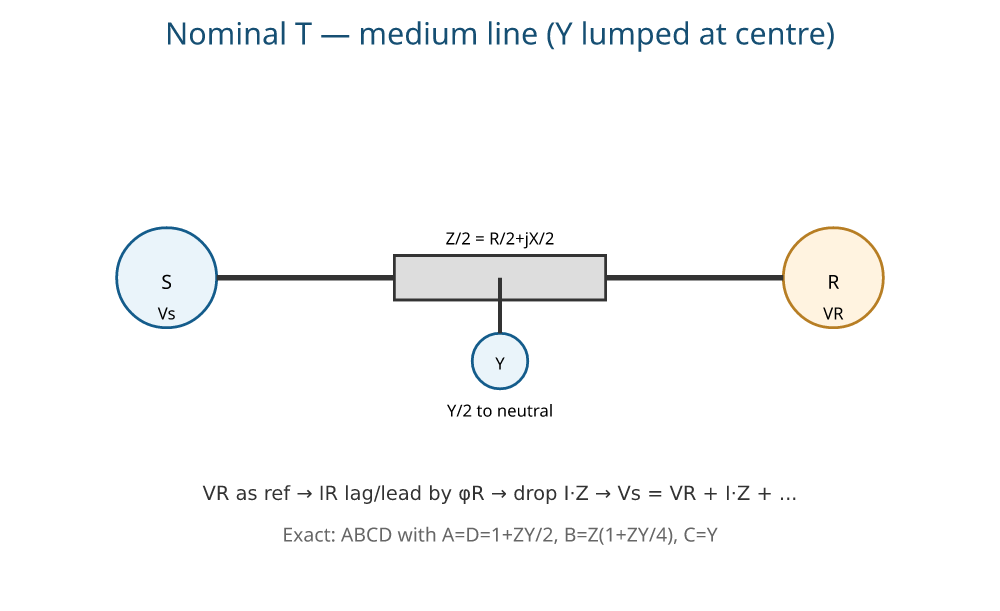
ધારણા (medium line 60–250km): Shunt capacitance નોંધપાત્ર; Nominal T માં કુલ shunt admittance Y વચ્ચે, કુલ series impedance Z બંને બાજુ સમાન વહેંચેલું (Z/2 – Y – Z/2).
વિશ્લેષણ (VR reference):
- Receiving current IR pf cosφR (VR થી φR lagging). VR phasor 0° પર.
- બીજા Z/2 પર voltage drop: (IR)(Z/2).
- Mid-point voltage Vc = VR + IR·Z/2. Shunt current Ic = Vc·Y (Y≈jωC હોય તો Vc થી ~90° lead).
- પહેલા Z/2 માં current: Is' = IR + Ic. Voltage drop Is'·Z/2.
- Sending voltage VS = Vc + Is'·Z/2 = VR + IR·Z/2 + (VR+IR·Z/2)Y·Z/2 + IR·Z/2.
ABCD constants: A = D = 1 + ZY/2, B = Z(1 + ZY/4), C = Y. Nominal T માટે બરાબર આ પ્રમાણે.
Vector diagram: VR, IR (φR lag) દોરો, IR·Z/2 vector ઉમેરો, પછી Vc, પછી Vc થી 90° આગળ Ic, પછી Is' = vector sum, પછી VS આગળ. Regulation અને power angle δ (VS અને VR વચ્ચે) બતાવે.
Q.2 (a) OR Explain Ferranti effect. (3 marks)Q.2 (a) OR Explain Ferranti effect. (3 marks)3 marks૦૩ ગુણ
Ferranti effect = receiving-end voltage exceeds sending-end voltage on no-load / light-load of a long line.
Cause: Line shunt capacitance draws charging current Ic = jωC·V which leads voltage by 90°. This current through series inductance causes voltage rise ΔV ≈ jX·Ic = jX·jωC·V = −ω²LC·V (negative sign → rise). Distributed effect magnifies over length.
When prominent: Long EHV lines/open-ended, and especially underground cables (high capacitance). At 50Hz, long 400kV line may see 5–10% rise.
Mitigation: Shunt reactors (inductive compensation) at ends, synchronous condensers, or operating with some load.
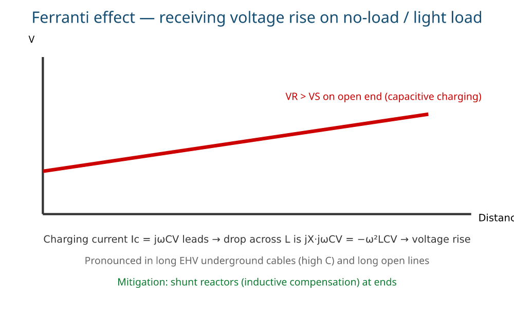
Ferranti effect = લાંબી line ના no-load / હળવા load પર receiving-end voltage sending-end કરતાં વધારે.
કારણ: Line shunt capacitance charging current Ic = jωC·V ખેંચે જે voltage થી 90° lead કરે. Series inductance માંથી આ current થી voltage rise ΔV ≈ jX·Ic = jX·jωC·V = −ω²LC·V (negative sign → rise). Length પર distributed effect વધે.
ક્યારે વધુ: લાંબી EHV lines/open-ended, અને ખાસ underground cables (વધુ capacitance). 50Hz પર લાંબી 400kV line માં 5–10% rise થઈ શકે.
નિવારણ: છેડા પર shunt reactors (inductive compensation), synchronous condensers, અથવા થોડો load સાથે ચલાવવું.
Q.2 (b) OR Explain function of load dispatch centre. (4 marks)Q.2 (b) OR Explain function of load dispatch centre. (4 marks)4 marks૦૪ ગુણ
Load Dispatch Centre (LDC) = grid operation control room (SLDC / RLDC / NLDC hierarchy in India).
Functions:
- Real-time monitoring & control: SCADA/EMS monitors generation, loads, line flows, frequency, voltage; issues dispatch instructions.
- Economic load dispatch: Allocate load to cheapest available generators respecting merit order, transmission constraints, reserves.
- Frequency & voltage control: Maintain 50Hz via AGC/ancillary services, reactive power management, tap control.
- Security & contingency: N-1 security analysis, outage scheduling, restoration after faults, blackout prevention.
- Market & scheduling: Day-ahead / real-time market clearing, interchange scheduling, unscheduled interchange (UI) / deviation settlement.
NLDC (national), 5 RLDCs (regional), SLDCs (state) coordinate via wideband communication (OFC/PLCC).
Load Dispatch Centre (LDC) = grid operation control room (India માં SLDC / RLDC / NLDC hierarchy).
કાર્યો:
- Real-time monitoring & control: SCADA/EMS generation, loads, line flows, frequency, voltage monitor કરે; dispatch instructions આપે.
- Economic load dispatch: Merit order, transmission constraints, reserves ને ધ્યાનમાં રાખી સૌથી સસ્તા ઉપલબ્ધ generators માં load વહેંચે.
- Frequency & voltage control: AGC/ancillary services દ્વારા 50Hz જાળવે, reactive power management, tap control.
- Security & contingency: N-1 security analysis, outage scheduling, faults પછી restoration, blackout prevention.
- Market & scheduling: Day-ahead / real-time market clearing, interchange scheduling, unscheduled interchange (UI) / deviation settlement.
NLDC (national), 5 RLDCs (regional), SLDCs (state) wideband communication (OFC/PLCC) દ્વારા coordinate કરે.
Q.2 (c) OR Explain end condenser method for the medium transmission line with vector diagram. (7 marks)Q.2 (c) OR Explain end condenser method for the medium transmission line with vector diagram. (7 marks)7 marks૦૭ ગુણ
End condenser method (capacitance lumped at receiving end): Simplest medium-line model. Total series impedance Z = R + jX for whole line in series; total shunt admittance Y = jωC lumped at receiving end (single capacitor to neutral). Less accurate than Nominal T/π but easy, slightly underestimates charging.
Analysis (VR reference):
- Receiving current IR at pf cosφR (lagging VR by φR if inductive load).
- Shunt current Ic = VR·Y (leads VR by 90° for pure capacitance; magnitude = VR·ωC).
- Total line current I = IR + Ic (phasor sum).
- Sending voltage VS = VR + I·Z = VR + (IR+Ic)(R+jX). Expand: resistive drop I·R in phase with I, reactive jI·X perpendicular.
Vector diagram: Draw VR horizontal, IR lagging by φR, Ic vertical up from VR tip, I = IR+Ic, then add I·R along I direction and I·X perpendicular → VS phasor. Shows larger regulation error than Nominal T but acceptable for lines <100km or approximate studies.
ABCD: A = 1 + ZY? No — for end condenser A=1, B=Z, C=Y, D=1+ZY (depending on reference direction) — check derivation per textbook.
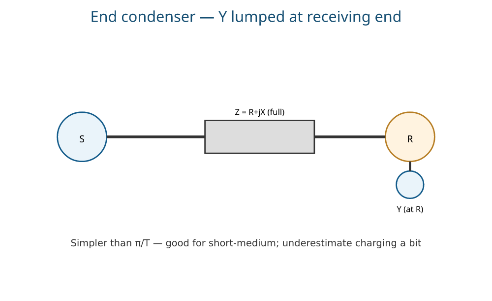
End condenser method (capacitance receiving end પર lumped): સૌથી સરળ medium-line model. કુલ series impedance Z = R + jX આખી line માટે series માં; કુલ shunt admittance Y = jωC receiving end પર lumped (neutral તરફ single capacitor). Nominal T/π કરતાં ઓછી accurate પણ સરળ, charging થોડું underestimate કરે.
વિશ્લેષણ (VR reference):
- Receiving current IR pf cosφR (inductive load હોય તો VR થી φR lagging).
- Shunt current Ic = VR·Y (pure capacitance માટે VR થી 90° lead; magnitude = VR·ωC).
- કુલ line current I = IR + Ic (phasor sum).
- Sending voltage VS = VR + I·Z = VR + (IR+Ic)(R+jX). Expand: I·R I ની દિશામાં, reactive jI·X perpendicular.
Vector diagram: VR horizontal દોરો, IR φR lagging, Ic VR tip થી vertical ઉપર, I = IR+Ic, પછી I·R I દિશામાં અને I·X perpendicular ઉમેરો → VS phasor. Nominal T કરતાં regulation error વધુ પણ <100km અથવા approximate studies માટે સ્વીકાર્ય.
ABCD: A = 1, B=Z, C=Y, D=1+ZY (reference direction પ્રમાણે) — textbook derivation તપાસો.
Q3 · EHV, HVDC and FACTS
Q.3 (a) State the application of the HVDC system. (3 marks)Q.3 (a) State the application of the HVDC system. (3 marks)3 marks૦૩ ગુણ
Typical HVDC applications:
- Long-distance bulk power transmission (>600–800km overhead, >40–50km submarine) — lower losses, no reactive compensation, no stability limit.
- Submarine / underground cables — DC has no charging current (capacitance not continuously charged), allows longer cable lengths.
- Asynchronous interconnection — links grids of different frequencies or unsynchronised regions (back-to-back HVDC).
- Offshore wind / remote renewables — HVDC collects and transmits power efficiently to main grid.
Examples in India: ±500kV Rihand–Dadri, ±800kV Champa–Kurukshetra, back-to-back at Vindhyachal, Chandrapur.
HVDC ના લાક્ષણિક ઉપયોગો:
- લાંબા-અંતરનો bulk power transmission (>600–800km overhead, >40–50km submarine) — ઓછો losses, reactive compensation નહીં, stability limit નહીં.
- Submarine / underground cables — DC માં charging current નહીં (capacitance સતત charge નહીં), લાંબી cable lengths શક્ય.
- Asynchronous interconnection — અલગ frequencies અથવા unsynchronised regions ને જોડે (back-to-back HVDC).
- Offshore wind / દૂરના renewables — HVDC power ને એકત્ર કરી મુખ્ય grid સુધી efficiently પહોંચાડે.
India માં ઉદાહરણો: ±500kV Rihand–Dadri, ±800kV Champa–Kurukshetra, Vindhyachal, Chandrapur પર back-to-back.
Q.3 (b) State the necessity of EHV transmission. (4 marks)Q.3 (b) State the necessity of EHV transmission. (4 marks)4 marks૦૪ ગુણ
Why EHV (400kV, 765kV, 1200kV UHV) necessary:
- Bulk power & load centres far apart — large thermal plants / renewables far from cities; EHV moves GW over hundreds of km with lower I²R loss (P∝VI, higher V → lower I).
- Right-of-way & corridor constraint — one 765kV line carries ~3× power of 400kV line; fewer lines, less land.
- Economy — beyond surge impedance loading, EHV cheaper per MW-km despite higher insulation cost; break-even vs HVDC at long distances.
- Voltage regulation & efficiency — higher V reduces current → lower drop, better regulation, less corona per MW (with bundled conductors).
Supported by bundled conductors (2–8 sub-conductors), high towers, reduced corona/RI.
EHV (400kV, 765kV, 1200kV UHV) શા માટે જરૂરી:
- Bulk power & load centres દૂર — મોટા thermal plants / renewables શહેરોથી દૂર; EHV સેંકડો km સુધી GW ખસેડે ઓછા I²R loss સાથે (P∝VI, વધુ V → ઓછો I).
- Right-of-way & corridor મર્યાદા — એક 765kV line ~3× power 400kV line કરતાં; ઓછી lines, ઓછી જમીન.
- Economy — surge impedance loading થી વધુ, insulation cost વધુ હોવા છતાં EHV પ્રતિ MW-km સસ્તું; લાંબા અંતરે HVDC સામે break-even.
- Voltage regulation & efficiency — વધુ V → ઓછો current → ઓછો drop, સારી regulation, પ્રતિ MW ઓછો corona (bundled conductors સાથે).
Bundled conductors (2–8 sub-conductors), ઊંચા towers, ઓછો corona/RI સાથે સપોર્ટેડ.
Q.3 (c) State the advantage and disadvantage of EHV A.C. system. (7 marks)Q.3 (c) State the advantage and disadvantage of EHV A.C. system. (7 marks)7 marks૦૭ ગુણ
Advantages of EHV AC:
- Efficient bulk power transfer over long distances with lower current → lower losses, better regulation.
- Lower per-MW cost (conductor, ROW) vs multiple lower-voltage lines; higher surge impedance loading (SIL ∝ V²/Zc).
- Mature AC switchgear, transformers (tap changers), protection — easy integration with existing AC grid.
- Interconnection of regions improves reliability, sharing reserves, and renewable integration (with FACTS).
Disadvantages / challenges:
- High insulation, clearance, corona: Large towers, wide ROW, corona loss, radio interference, audible noise — needs bundled conductors, grading.
- Reactive power & Ferranti: High capacitance → large charging, Ferranti rise on no-load → needs shunt reactors, SVC/STATCOM.
- Stability limit: Power ∝ (VsVr / X) sinδ → long lines have high X → angle stability limit below thermal limit; needs series compensation.
- Short-circuit level high: Higher fault MVA → larger switchgear, protection complexity, EMF on parallel lines.
- Environmental/aesthetic: Visual impact, EMF concerns, land acquisition.
Overall: EHV AC best for meshed AC network; beyond ~800km HVDC often more economical.
EHV AC ના ફાયદા:
- લાંબા અંતરે efficient bulk power transfer ઓછા current સાથે → ઓછો losses, સારી regulation.
- પ્રતિ MW ઓછી cost (conductor, ROW) અનેક lower-voltage lines કરતાં; વધુ surge impedance loading (SIL ∝ V²/Zc).
- પરિપક્વ AC switchgear, transformers (tap changers), protection — હાલના AC grid સાથે સરળ integration.
- Regions ને interconnect કરવાથી reliability વધે, reserves share થાય, renewable integration (FACTS સાથે) સારું.
ગેરફાયદા / પડકારો:
- ઊંચું insulation, clearance, corona: મોટા towers, પહોળું ROW, corona loss, radio interference, audible noise — bundled conductors, grading જોઈએ.
- Reactive power & Ferranti: વધુ capacitance → મોટો charging, no-load પર Ferranti rise → shunt reactors, SVC/STATCOM જોઈએ.
- Stability limit: Power ∝ (VsVr / X) sinδ → લાંબી lines માં X વધારે → angle stability limit thermal limit થી નીચે; series compensation જોઈએ.
- Short-circuit level વધારે: વધુ fault MVA → મોટું switchgear, protection complexity, parallel lines પર EMF.
- પર્યાવરણીય/aesthetic: Visual impact, EMF ચિંતા, જમીન સંપાદન.
કુલ: Meshed AC network માટે EHV AC શ્રેષ્ઠ; ~800km થી વધુ HVDC ઘણીવાર વધુ economical.
Q.3 (a) OR State the advantages of the FACTS. (3 marks)Q.3 (a) OR State the advantages of the FACTS. (3 marks)3 marks૦૩ ગુણ
FACTS = Flexible AC Transmission Systems (power-electronics controlled): SVC, STATCOM, TCSC, UPFC etc.
Advantages:
- Increased power transfer capability (push thermal limit closer, control power flow vs uncontrolled loop flows).
- Fast voltage/var control (STATCOM/SVC regulate voltage, reduce flicker, improve stability).
- Improved transient & dynamic stability (damping oscillations, increase transfer margin).
- Loss reduction & power quality (harmonic filters with FACTS, reactive compensation reduces current).
FACTS = Flexible AC Transmission Systems (power-electronics controlled): SVC, STATCOM, TCSC, UPFC વગેરે.
ફાયદા:
- વધુ power transfer capability (thermal limit નજીક push, loop flows ને control કરી power flow control).
- ઝડપી voltage/var control (STATCOM/SVC voltage regulate કરે, flicker ઘટાડે, stability સુધારે).
- સારી transient & dynamic stability (oscillations damp, transfer margin વધે).
- Loss ઘટાડો & power quality (FACTS સાથે harmonic filters, reactive compensation current ઘટાડે).
Q.3 (b) OR State the problems associated with EHV transmission. (4 marks)Q.3 (b) OR State the problems associated with EHV transmission. (4 marks)4 marks૦૪ ગુણ
Problems / phenomena with EHV:
- Corona & radio interference: High surface gradient → corona loss, audible noise, RI/TV interference — needs bundled conductors, larger diameter, grading rings.
- Overvoltages: Switching surges, lightning, Ferranti rise on no-load → insulation coordination, surge arresters, shunt reactors.
- Reactive power surplus: Large capacitive charging → voltage rise, need switched shunt reactors / SVC.
- Stability & power swing: High X reduces steady-state & transient stability limit; needs series compensation, PSS, careful protection.
- Short-circuit & EMF: Higher fault levels, electromagnetic coupling to parallel circuits, induced voltages on pipes.
EHV સાથે સમસ્યાઓ / ઘટનાઓ:
- Corona & radio interference: વધુ surface gradient → corona loss, audible noise, RI/TV interference — bundled conductors, મોટો diameter, grading rings જોઈએ.
- Overvoltages: Switching surges, lightning, no-load પર Ferranti rise → insulation coordination, surge arresters, shunt reactors.
- Reactive power surplus: મોટો capacitive charging → voltage rise, switched shunt reactors / SVC જોઈએ.
- Stability & power swing: વધુ X steady-state & transient stability limit ઘટાડે; series compensation, PSS, કાળજીપૂર્વક protection જોઈએ.
- Short-circuit & EMF: વધુ fault levels, parallel circuits સાથે electromagnetic coupling, pipes પર induced voltages.
Q.3 (c) OR State the types of HVDC transmission system. Explain any three. (7 marks)Q.3 (c) OR State the types of HVDC transmission system. Explain any three. (7 marks)7 marks૦૭ ગુણ
Types classified by poles/ground:
| Type | Features |
|---|---|
| Monopolar (one pole + earth/sea return) | Single HV conductor (+ve or −ve) + ground return; economical for low power / first stage; earth electrode corrosion, interference |
| Bipolar (two poles ±, ground as emergency return) | Two conductors +ve & −ve; normal balanced earth current ~0; one pole can operate as monopolar at 50% on fault — high reliability; most common (±500kV, ±800kV) |
| Homopolar (both poles same polarity, earth return) | Less corona (less radio interference) since bundles of same polarity; needs double rating per polarity but corona advantage |
| Multiterminal (more than two converter stations on same DC line) | Complex control, used for tapping intermediate load centres |
| Back-to-back (two converters at same location, no DC line) | Connects asynchronous grids; short DC bus — e.g., 50Hz–60Hz or different regions |
Any three explained (e.g., Monopolar, Bipolar, Back-to-back): Bipolar dominant for bulk overhead: two 12-pulse converters per pole, DC filters, smoothing reactors, converter transformers, ground electrodes. On one pole outage, ground return carries full current (overload earth electrode temporarily). Monopolar used for initial commissioning or submarine cable with sea return. Back-to-back allows frequency-tolerant interchange without long line — control via firing angles.
poles/ground પ્રમાણે પ્રકારો:
| પ્રકાર | લાક્ષણિકતા |
|---|---|
| Monopolar (એક pole + earth/sea return) | Single HV conductor (+ve અથવા −ve) + ground return; ઓછી power / પ્રથમ stage માટે economical; earth electrode corrosion, interference |
| Bipolar (બે poles ±, emergency return તરીકે ground) | બે conductors +ve & −ve; સામાન્ય balanced earth current ~0; એક pole fault પર monopolar તરીકે 50% પર ચાલી શકે — વધુ reliability; સૌથી સામાન્ય (±500kV, ±800kV) |
| Homopolar (બંને poles એક જ polarity, earth return) | ઓછો corona (ઓછો radio interference) કારણ કે એક જ polarity ના bundles; દર polarity દીઠ double rating પણ corona ફાયદો |
| Multiterminal (એક જ DC line પર બે થી વધુ converter stations) | જટિલ control, intermediate load centres ને tap કરવા વપરાય |
| Back-to-back (એક જ સ્થળે બે converters, DC line નહીં) | Asynchronous grids ને જોડે; ટૂંકો DC bus — દા.ત. 50Hz–60Hz અથવા અલગ regions |
કોઈપણ ત્રણ સમજાવો (દા.ત. Monopolar, Bipolar, Back-to-back): Bulk overhead માટે Bipolar પ્રભાવી: દર pole દીઠ બે 12-pulse converters, DC filters, smoothing reactors, converter transformers, ground electrodes. એક pole outage પર ground return પૂરો current વહન કરે (earth electrode કામચલાઉ overload). Monopolar પ્રારંભિક commissioning અથવા sea return સાથે submarine cable માટે વપરાય. Back-to-back લાંબી line વગર frequency-tolerant interchange માટે — firing angles દ્વારા control.
Q4 · Cables and distribution
Q.4 (a) Explain cable laying procedure. (3 marks)Q.4 (a) Explain cable laying procedure. (3 marks)3 marks૦૩ ગુણ
Methods & steps:
- Route survey & trench: Mark route, obtain permits, excavate trench 0.8–1.2m deep, 0.3–0.6m wide; clear stones; bed of 10cm sand.
- Cable handling: Check drum direction, megger test, roller placement, pulling tension within limits, maintain bending radius >12× outer diameter; avoid twisting.
- Laying: Unroll from top of drum, pull with winch/sand jacks, place on sand bed; leave slack at joints (snake).
- Protection & backfill: Cover with sand, protective tiles/bricks, warning tape/marker; backfill in layers, compact; reinstatement.
- Jointing & testing: Straight joints, end terminations in pits; insulation resistance, continuity, sheath test, VLF/pressure test before energising; route markers every 20–30m.
Types: direct buried, trough, duct/pipe, tunnel, rack.
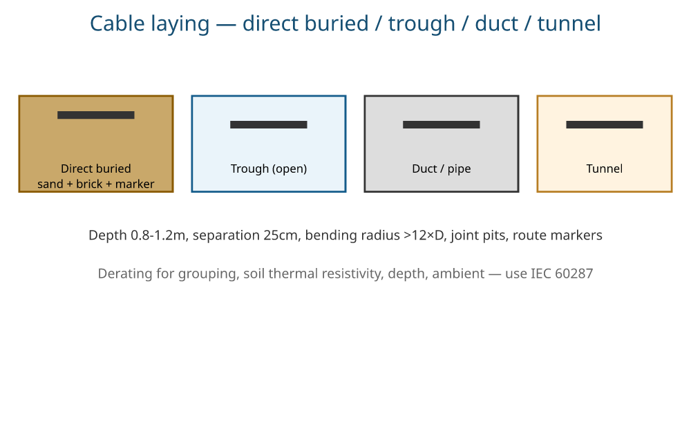
Methods & steps:
- Route survey & trench: Route mark કરો, permits મેળવો, trench 0.8–1.2m ઊંડી, 0.3–0.6m પહોળી ખોદો; પથ્થર દૂર કરો; 10cm sand નો bed.
- Cable handling: Drum direction તપાસો, megger test, roller placement, pulling tension મર્યાદામાં, bending radius >12× outer diameter જાળવો; twisting ટાળો.
- Laying: Drum ની ઉપરથી unroll કરો, winch/sand jacks થી ખેંચો, sand bed પર મૂકો; joints પર slack (snake) છોડો.
- Protection & backfill: Sand થી cover કરો, protective tiles/bricks, warning tape/marker; layers માં backfill, compact; reinstatement.
- Jointing & testing: Pits માં straight joints, end terminations; energising પહેલાં insulation resistance, continuity, sheath test, VLF/pressure test; દર 20–30m route markers.
પ્રકારો: direct buried, trough, duct/pipe, tunnel, rack.
Q.4 (b) Explain Feeder, Distributor, and Service mains. (4 marks)Q.4 (b) Explain Feeder, Distributor, and Service mains. (4 marks)4 marks૦૪ ગુણ
| Element | Role |
|---|---|
| Feeder | Line from substation bus to distribution centre — no tappings along length; designed for current-carrying capacity (thermal limit); current constant along length |
| Distributor | Line with tappings at intervals to consumers via service mains; design governed by voltage drop (regulation); current varies along length (taps draw off) |
| Service mains | Short cable from distributor tapping to consumer meter/cut-out; sized for individual consumer load, includes energy meter, fuse |
Analogy: Feeder = highway (no exits), Distributor = city road with exits, Service mains = driveway to house. Feeders often 11kV/415V depending on area; distributors LV (415/230V).
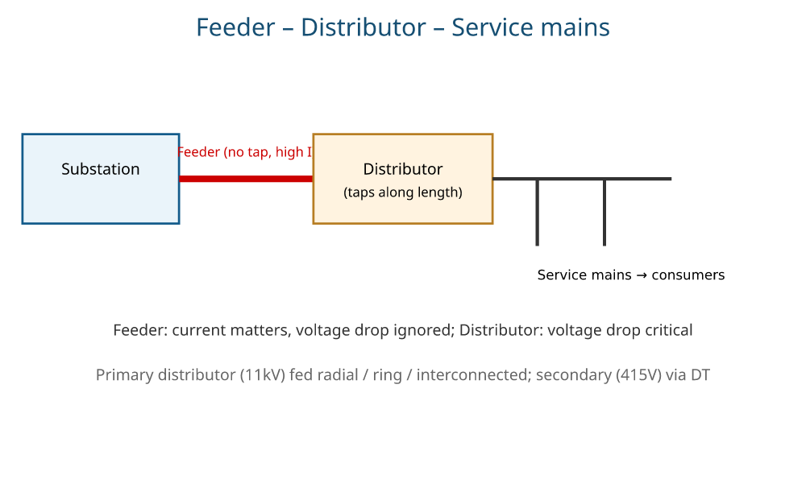
| એલિમેન્ટ | ભૂમિકા |
|---|---|
| Feeder | Substation bus થી distribution centre સુધી line — વચ્ચે કોઈ tappings નહીં; current-carrying capacity (thermal limit) માટે design; current આખી length પર constant |
| Distributor | અંતરે tappings સાથે service mains દ્વારા consumers સુધી line; design voltage drop (regulation) દ્વારા નક્કી; current length સાથે બદલાય (taps થી વહેંચાય) |
| Service mains | Distributor tapping થી consumer meter/cut-out સુધી ટૂંકો cable; વ્યક્તિગત consumer load માટે sized, energy meter, fuse સાથે |
Analogy: Feeder = highway (exits વગર), Distributor = exits સાથે city road, Service mains = ઘર સુધી driveway. Feeders ઘણીવાર વિસ્તાર પ્રમાણે 11kV/415V; distributors LV (415/230V).
Q.4 (c) Explain methods of feeding primary distributor. (7 marks)Q.4 (c) Explain methods of feeding primary distributor. (7 marks)7 marks૦૭ ગુણ
Primary distributor = 11kV (or 33kV) network fed from grid/primary substation, feeding distribution substations (DTs) that step to 415V.
Methods:
| Method | Scheme & features |
|---|---|
| Radial | Single feeder from one substation, branches outward like tree; simple, cheap, easy protection but single failure → downstream blackout; voltage drop accumulates; rural/ low-density use |
| Ring / loop | Closed loop fed at one or two points; any section can be isolated; supply can come from either side → higher reliability; common in urban 11kV |
| Interconnected / mesh | Multiple feeders/substations interconnected; automatic reclosing, highest reliability, lower voltage drop, but complex protection (directional, pilot) |
| Double feeder | Two parallel feeders to same area — one standby; simple redundancy |
Comparison for exam: Radial cheapest but least reliable; ring balances cost/reliability for towns; interconnected for critical urban/industrial. Selection on reliability requirement, load density, cost, automation level (SCADA/ADMS). Include diagrams: radial tree, ring closed loop, mesh grid.
Primary distributor = grid/primary substation થી feed થતું 11kV (અથવા 33kV) network, જે distribution substations (DTs) ને feed કરે જે 415V પર step કરે.
પદ્ધતિઓ:
| પદ્ધતિ | Scheme & લાક્ષણિકતા |
|---|---|
| Radial | એક substation થી single feeder, tree જેવું બહાર ફેલાય; સરળ, સસ્તું, સરળ protection પણ single failure → નીચે blackout; voltage drop ભેગો થાય; rural/ ઓછી density માં ઉપયોગ |
| Ring / loop | એક અથવા બે points થી feed થતો closed loop; કોઈપણ section isolate કરી શકાય; બંને બાજુથી supply → વધુ reliability; urban 11kV માં સામાન્ય |
| Interconnected / mesh | અનેક feeders/substations interconnected; automatic reclosing, સૌથી વધુ reliability, ઓછો voltage drop, પણ જટિલ protection (directional, pilot) |
| Double feeder | એક જ area પર બે parallel feeders — એક standby; સરળ redundancy |
પરીક્ષા માટે સરખામણી: Radial સૌથી સસ્તું પણ ઓછું reliable; ring શહેરો માટે cost/reliability સંતુલન; interconnected critical urban/industrial માટે. પસંદગી reliability જરૂરિયાત, load density, cost, automation level (SCADA/ADMS) પર.
Q.4 (a) OR State methods of feeding Secondary distributor. (3 marks)Q.4 (a) OR State methods of feeding Secondary distributor. (3 marks)3 marks૦૩ ગુણ
Secondary (415/230V) distributor fed from 11kV/415V DT:
- Radial secondary: Single DT feeds outward branches — simple but voltage drop high at far end, fault isolates downstream.
- Ring secondary: Closed loop fed at one DT (or two DTs) — improved voltage profile, fault can be isolated, often used in urban LV networks.
- Interconnected LV: Multiple DTs interconnected on LV side — best voltage regulation, high reliability, used in dense urban/city centres with bus-tie.
LV distributors designed for voltage drop (±6% per IE rules) not current alone; load balancing across phases essential.
11kV/415V DT થી feed થતો Secondary (415/230V) distributor:
- Radial secondary: Single DT બહાર branches feed કરે — સરળ પણ દૂરના છેડે voltage drop વધુ, fault નીચે isolate થાય.
- Ring secondary: એક DT (અથવા બે DTs) થી feed થતો closed loop — સારો voltage profile, fault isolate કરી શકાય, urban LV networks માં ઘણીવાર.
- Interconnected LV: LV side પર અનેક DTs interconnected — શ્રેષ્ઠ voltage regulation, વધુ reliability, ગાઢ urban/city centres માં bus-tie સાથે વપરાય.
LV distributors voltage drop (±6% IE rules પ્રમાણે) માટે design થાય માત્ર current માટે નહીં; phases માં load balancing જરૂરી.
Q.4 (b) OR Classify the types of cable. (4 marks)Q.4 (b) OR Classify the types of cable. (4 marks)4 marks૦૪ ગુણ
| Basis | Types |
|---|---|
| Voltage | LV (≤1kV, PVC/XLPE), MV (1–33kV), HV (33–132kV oil-filled), EHV (220kV+ XLPE/gas) |
| Insulation | Paper (oil-impregnated, PILC), PVC, XLPE (cross-linked polyethylene — now dominant), EPR, oil-filled, gas-filled (SF6) |
| Cores | Single-core (HV), 3-core belted/screened (MV/LV), 3.5-core (LV with neutral) |
| Construction | Belted (common insulation belt), screened (individual H/HSL screens for uniform stress), armoured/unarmoured, flexible control cables |
| Use | Power, control, instrumentation, communication, mining/fire-resistant |
XLPE now preferred for most LV–EHV due to higher thermal (90°C) and excellent dielectric; paper still for special HVDC/mass-impregnated.
| ધોરણ | પ્રકારો |
|---|---|
| Voltage | LV (≤1kV, PVC/XLPE), MV (1–33kV), HV (33–132kV oil-filled), EHV (220kV+ XLPE/gas) |
| Insulation | Paper (oil-impregnated, PILC), PVC, XLPE (cross-linked polyethylene — હવે પ્રભાવી), EPR, oil-filled, gas-filled (SF6) |
| Cores | Single-core (HV), 3-core belted/screened (MV/LV), 3.5-core (LV neutral સાથે) |
| Construction | Belted (સામાન્ય insulation belt), screened (સમાન stress માટે વ્યક્તિગત H/HSL screens), armoured/unarmoured, flexible control cables |
| ઉપયોગ | Power, control, instrumentation, communication, mining/fire-resistant |
XLPE હવે મોટાભાગના LV–EHV માટે પસંદગી — વધુ thermal (90°C) અને ઉત્તમ dielectric; paper હજુ ખાસ HVDC/mass-impregnated માટે.
Q.4 (c) OR Explain general construction of cable. (7 marks)Q.4 (c) OR Explain general construction of cable. (7 marks)7 marks૦૭ ગુણ
Power cable layers (from centre outwards):
- Conductor: Stranded copper / aluminium (sector-shaped for 3-core to reduce diameter; circular for single-core) — carries load current.
- Conductor screen (stress control): Semi-conductive tape over conductor to smooth electric field (avoid corona in voids).
- Insulation: Paper (lapped, oil-impregnated), PVC, XLPE (extruded) — must withstand phase voltage, thermal cycling.
- Insulation screen: Semi-conductive + metallic screen (copper tape/wires) — confines field radially, carries charging/fault current.
- Bedding: PVC/jute separation layer.
- Armour: Galvanised steel wires/tapes (single-core non-magnetic — aluminium) — mechanical protection, tensile strength during laying.
- Outer sheath / serving: PVC/PE outer jacket — moisture, corrosion, mechanical protection; marked with voltage, size, year.
Grading: Capacitance grading (unequal dielectric) or intersheath grading historically; modern XLPE uses geometric control. Belted vs H-type vs HSL distinctions for 11kV.
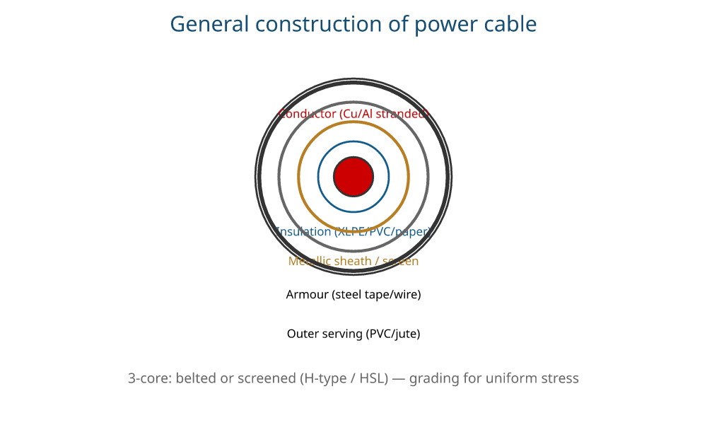
Power cable ના layers (વચ્ચેથી બહાર):
- Conductor: Stranded copper / aluminium (3-core માટે sector-shaped — diameter ઘટાડવા; single-core માટે circular) — load current વહન.
- Conductor screen (stress control): Conductor પર semi-conductive tape — electric field ને smooth કરે (voids માં corona ટાળવા).
- Insulation: Paper (lapped, oil-impregnated), PVC, XLPE (extruded) — phase voltage, thermal cycling સહન કરવું પડે.
- Insulation screen: Semi-conductive + metallic screen (copper tape/wires) — field ને radial confine કરે, charging/fault current વહન કરે.
- Bedding: PVC/jute separation layer.
- Armour: Galvanised steel wires/tapes (single-core non-magnetic — aluminium) — mechanical protection, laying દરમિયાન tensile strength.
- Outer sheath / serving: PVC/PE outer jacket — moisture, corrosion, mechanical protection; voltage, size, year mark કરેલ.
Grading: Capacitance grading (અસમાન dielectric) અથવા intersheath grading ઐતિહાસિક; આધુનિક XLPE geometric control વાપરે. 11kV માટે Belted vs H-type vs HSL તફાવતો.
Q5 · Sag, cables and system comparison
Q.5 (a) Explain the effect of wind on Sag. (3 marks)Q.5 (a) Explain the effect of wind on Sag. (3 marks)3 marks૦૩ ગુણ
Still-air sag: Conductor weight w (kg/m) vertical → sag D = w·L² / 8T (L = span, T = tension).
With wind: Wind pressure acts horizontally (≈ ww = pressure × projected area). Resultant force per metre:
Conductor swings to inclined plane; effective weight ↑ → sag increases (vertical component D·secθ) and lateral displacement occurs. Design sag = still-air sag × (wr / w). Clearances must allow for slant + swing (adjacent phases, tower).
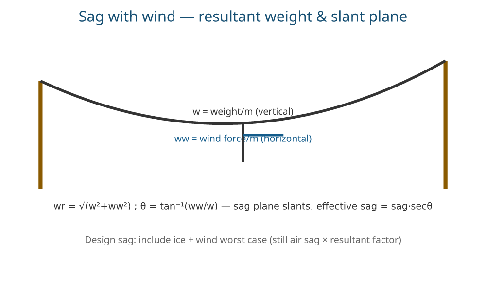
Still-air sag: Conductor weight w (kg/m) vertical → sag D = w·L² / 8T (L = span, T = tension).
પવન સાથે: Wind pressure horizontal લાગે (≈ ww = pressure × projected area). Resultant force પ્રતિ metre:
Conductor inclined plane તરફ ઝૂકે; effective weight ↑ → sag વધે (vertical component D·secθ) અને lateral displacement થાય. Design sag = still-air sag × (wr / w). Clearances slant + swing (આસપાસના phases, tower) ને ધ્યાનમાં રાખીને જોઈએ.
Q.5 (b) Explain oil filled cable with diagram. (4 marks)Q.5 (b) Explain oil filled cable with diagram. (4 marks)4 marks૦૪ ગુણ
Oil-filled cable = high-voltage single-core cable with hollow conductor acting as oil duct, connected to pressurised oil reservoirs.
Construction: Hollow stranded conductor (oil channel inside), paper insulation lapped and oil-impregnated under vacuum, lead sheath, armour, serving. Oil reservoirs (pressure tanks at ends / feeding points) maintain ~3–5 kg/cm² pressure; feeding via oil duct compensates thermal expansion/contraction and fills voids.
Advantages: Void-free dielectric → higher working stress (→ higher current), better thermal conductivity (oil convection in duct), longer single lengths, suitable for 132–400kV submarine/urban EHV.
Disadvantages: Expensive, complex auxiliaries (tanks, pumps, gauges, alarms), oil leak fire/environment risk, maintenance intensive. Largely succeeded by XLPE for new EHV, but still used for very high voltage submarine links.
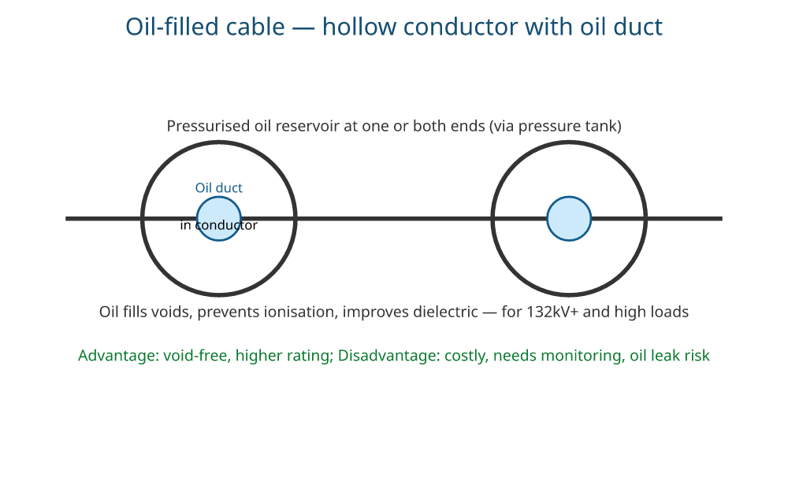
Oil-filled cable = hollow conductor અંદર oil duct સાથે high-voltage single-core cable, pressurised oil reservoirs સાથે જોડેલ.
બંધારણ: Hollow stranded conductor (અંદર oil channel), paper insulation lapped અને vacuum હેઠળ oil-impregnated, lead sheath, armour, serving. Oil reservoirs (છેડા / feeding points પર pressure tanks) ~3–5 kg/cm² pressure જાળવે; oil duct દ્વારા feeding thermal expansion/contraction ને compensate કરે અને voids ભરે.
ફાયદા: Void-free dielectric → વધુ working stress (→ વધુ current), સારી thermal conductivity (duct માં oil convection), વધુ લાંબી single lengths, 132–400kV submarine/urban EHV માટે યોગ્ય.
ગેરફાયદા: મોંઘું, જટિલ auxiliaries (tanks, pumps, gauges, alarms), oil leak થી fire/environment risk, maintenance વધુ. નવા EHV માટે મોટાભાગે XLPE એ બદલ્યું, પણ ખૂબ high voltage submarine links માટે હજુ વપરાય.
Q.5 (c) Compare D.C transmission system and A.C transmission system. (7 marks)Q.5 (c) Compare D.C transmission system and A.C transmission system. (7 marks)7 marks૦૭ ગુણ
| Aspect | DC transmission | AC transmission |
|---|---|---|
| Definition | DC (bipolar ±, monopolar) with converter stations | 3-phase AC (50Hz) with transformers |
| Conductors | 2 wires (bipolar) / 1 + earth (monopolar) — fewer, no skin effect | 3 wires (3-phase) — skin effect, larger bundle needed |
| Losses | Lower line I²R for same power (higher V, no reactive), but converter losses (~1–2% per station) | Higher I²R + reactive (line charging, Ferranti); transformer losses |
| Stability | No angle stability limit; controllable power flow | Angle stability (δ <90°), needs compensation |
| Interconnection | Links asynchronous grids (different f), back-to-back | Needs synchronism, same frequency |
| Cable use | Long submarine/UG cables possible (no charging current) | Charging limits cable length (~40km AC) |
| Cost | High terminal cost, low line cost — economical beyond ~600km OH, ~50km cable | Low terminal, higher line cost — economical for shorter/meshed |
Conclusion: AC for meshed distribution and generation integration; DC for long bulk, submarine, asynchronous links. Modern grids hybrid (HVDC corridors within AC mesh).
| પાસું | DC transmission | AC transmission |
|---|---|---|
| વ્યાખ્યા | Converter stations સાથે DC (bipolar ±, monopolar) | Transformers સાથે 3-phase AC (50Hz) |
| Conductors | 2 wires (bipolar) / 1 + earth (monopolar) — ઓછા, skin effect નહીં | 3 wires (3-phase) — skin effect, મોટો bundle જોઈએ |
| Losses | એ જ power માટે ઓછો line I²R (વધુ V, reactive નહીં), પણ converter losses (~1–2% દર station) | વધુ I²R + reactive (line charging, Ferranti); transformer losses |
| Stability | Angle stability limit નહીં; power flow controllable | Angle stability (δ <90°), compensation જોઈએ |
| Interconnection | Asynchronous grids (અલગ f) ને જોડે, back-to-back | Synchronism જોઈએ, એક જ frequency |
| Cable ઉપયોગ | લાંબી submarine/UG cables શક્ય (charging current નહીં) | Charging cable length મર્યાદિત (~40km AC) |
| Cost | Terminal cost વધુ, line cost ઓછી — ~600km OH, ~50km cable થી વધુ economical | Terminal ઓછું, line વધુ — ટૂંકા/meshed માટે economical |
નિષ્કર્ષ: Meshed distribution અને generation integration માટે AC; લાંબા bulk, submarine, asynchronous links માટે DC. આધુનિક grids hybrid (AC mesh અંદર HVDC corridors).
Q.5 (a) OR Explain transposition of transmission line. (3 marks)Q.5 (a) OR Explain transposition of transmission line. (3 marks)3 marks૦૩ ગુણ
Transposition = periodically interchanging positions of the three phase conductors along the route (R↔Y, Y↔B, B↔R) over equal thirds of length.
Purpose: Each phase experiences same average inductance/capacitance to ground → balanced impedances → symmetrical voltage drops → reduced negative/zero sequence, less interference to parallel communication lines, improved protection balance.
Done at transposition towers (special cross-arm layout) typically every ~100km for long EHV lines; short lines often untransposed (asymmetry negligible).
Transposition = ત્રણ phase conductors ની positions ને route દરમિયાન સમયાંતરે અદલાબદલી કરવી (R↔Y, Y↔B, B↔R) length ના સમાન ત્રીજા ભાગે.
હેતુ: દરેક phase ને ground તરફ સમાન સરેરાશ inductance/capacitance → balanced impedances → સમાન voltage drops → negative/zero sequence ઓછું, parallel communication lines પર interference ઓછું, protection balance સારું.
Transposition towers (ખાસ cross-arm layout) પર સામાન્ય રીતે દર ~100km લાંબી EHV lines માટે; ટૂંકી lines ઘણીવાર untransposed (asymmetry નજીવું).
Q.5 (b) OR State the desirable properties of the insulators. (4 marks)Q.5 (b) OR State the desirable properties of the insulators. (4 marks)4 marks૦૪ ગુણ
Desirable properties:
- High dielectric strength — withstand operating + overvoltage (lightning/switching) without breakdown; high flashover, low leakage.
- High mechanical strength — tensile/compressive to carry conductor tension, wind, ice, vibration; creepage distance per pollution.
- Low porosity & high surface resistivity — non-absorbent (glazed porcelain / hydrophobic polymer), resists pollution, tracking, erosion.
- Thermal & chemical stability — low thermal expansion, withstand temperature cycling, UV, chemicals, corona.
- Non-brittle, light, economical — easy handling, long life, low maintenance; self-cleaning profile.
ઇચ્છનીય ગુણધર્મો:
- ઊંચી dielectric strength — operating + overvoltage (lightning/switching) breakdown વગર સહન; ઊંચો flashover, ઓછો leakage.
- ઊંચી mechanical strength — conductor tension, wind, ice, vibration સહન કરવા tensile/compressive; pollution પ્રમાણે creepage distance.
- ઓછી porosity & વધુ surface resistivity — non-absorbent (glazed porcelain / hydrophobic polymer), pollution, tracking, erosion સામે પ્રતિકાર.
- Thermal & chemical stability — ઓછું thermal expansion, temperature cycling, UV, chemicals, corona સહન.
- Non-brittle, હળવું, economical — સરળ handling, લાંબી life, ઓછું maintenance; self-cleaning profile.
Q.5 (c) OR Compare Overhead transmission system and Underground transmission system. (7 marks)Q.5 (c) OR Compare Overhead transmission system and Underground transmission system. (7 marks)7 marks૦૭ ગુણ
| Aspect | Overhead (OH) | Underground (UG / cable) |
|---|---|---|
| Cost | Low initial (poles/towers, conductors, insulators); cheap to expand | High (cable + trench/tunnel + joints); 5–10× OH for same voltage |
| Insulation | Air (self-healing), large clearances, visible | Solid/oil/XLPE dielectric, compact, no air clearance, needs cooling consideration |
| Faults & maintenance | Exposed to wind, lightning, pollution → more faults; easy to locate/repair (visual), faster restoration | Protected → fewer faults; harder to locate, long repair (excavation), needs cable route markers |
| Capacity & losses | High thermal rating (air cooled), controllable sag/tension | Limited by thermal soil resistivity, grouping derating; charging current limits AC cable length |
| Aesthetics & ROW | Visual impact, wide ROW, EMF concerns | Invisible, narrow ROW, preferred in urban/congested areas |
| Life & safety | Lightning/ice prone, requires earthing, danger to public/ birds | Safe, no electrocution risk, but oil leak (old) / fire concerns |
Choice: OH for rural, long-distance bulk EHV (economical); UG for urban, river crossings, submarine, congested corridors despite cost. Often hybrid (OH trunk + UG in city).
| પાસું | Overhead (OH) | Underground (UG / cable) |
|---|---|---|
| Cost | ઓછી initial (poles/towers, conductors, insulators); expand સસ્તું | વધારે (cable + trench/tunnel + joints); એ જ voltage માટે OH કરતાં 5–10× |
| Insulation | હવા (self-healing), મોટી clearances, દૃશ્યમાન | Solid/oil/XLPE dielectric, compact, હવા clearance નહીં, cooling ધ્યાનમાં રાખવું |
| Faults & maintenance | Wind, lightning, pollution ને ખુલ્લું → વધુ faults; locate/repair સરળ (visual), ઝડપી restoration | Protected → ઓછા faults; locate મુશ્કેલ, repair લાંબો (excavation), cable route markers જોઈએ |
| Capacity & losses | ઊંચી thermal rating (હવા ઠંડક), sag/tension controllable | Thermal soil resistivity, grouping derating થી મર્યાદિત; charging current AC cable length મર્યાદિત કરે |
| Aesthetics & ROW | Visual impact, પહોળું ROW, EMF ચિંતા | અદૃશ્ય, સાંકડું ROW, urban/congested areas માં પસંદગી |
| Life & safety | Lightning/ice risk, earthing જરૂરી, public/ birds માટે જોખમ | સલામત, electrocution risk નહીં, પણ oil leak (જૂનું) / fire ચિંતા |
પસંદગી: Rural, લાંબા bulk EHV માટે OH (economical); Urban, river crossings, submarine, congested corridors માટે UG — cost છતાં. ઘણીવાર hybrid (OH trunk + શહેરમાં UG).